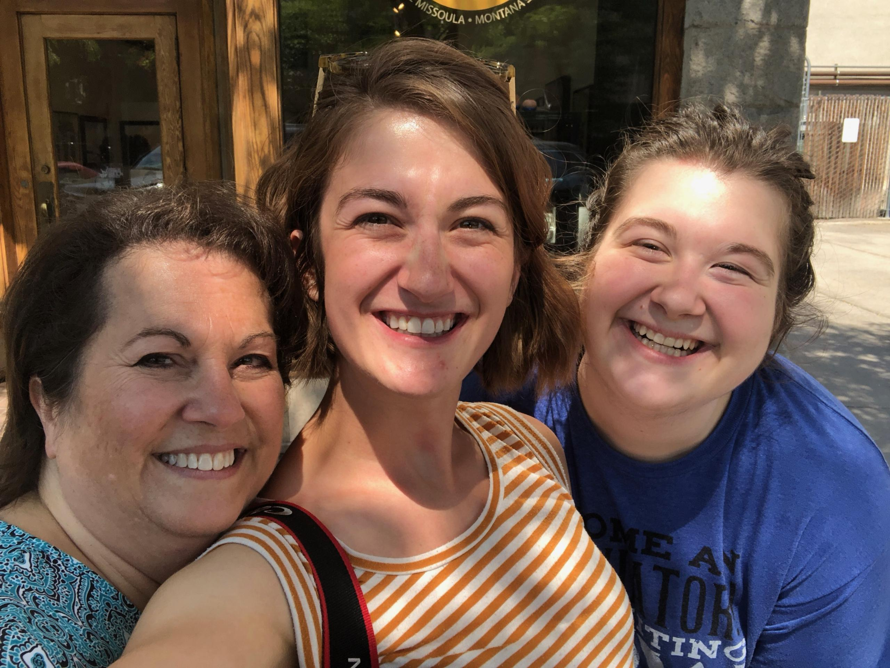
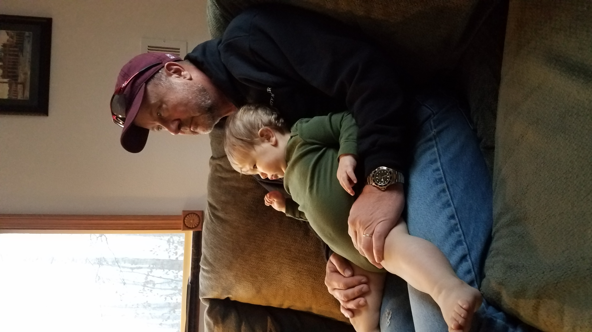
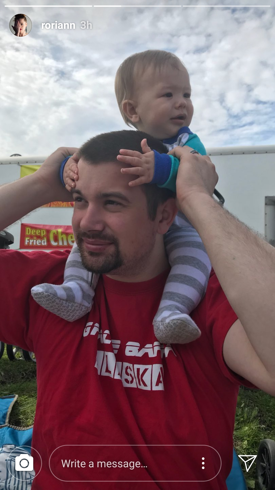
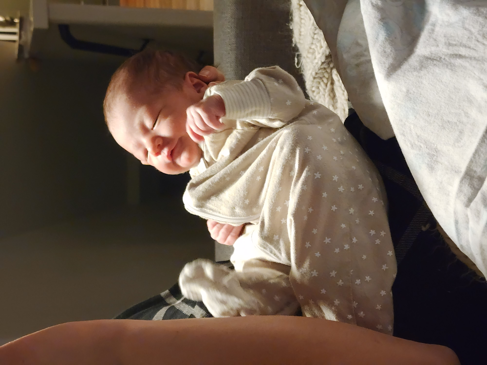
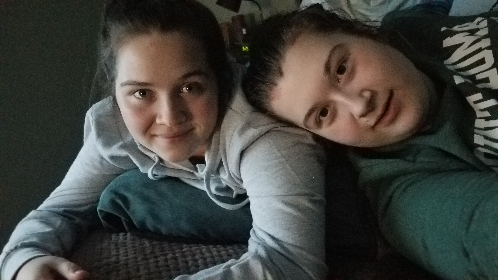
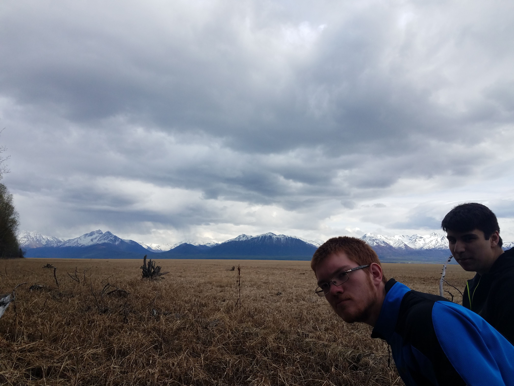

This is my mother, Jeana (pronounced like Gina) and sister Sarah, with me on the right. This was taken on a visit to my Sister, not long before I came to Missoula for college and to be near her.

My father, Kevin, with Lincoln, his first Grandchild and my first nibling (slang for niece or nephew I adopted).

My older brother Nate and his son and first child Lincoln, taken several years ago when Lincoln was still small enough to sit on his dads shoulders.

The newest addition to the clan, Luna Rey Chaput de Saintonge. My sisters second child, born two days before Halloween, this year, 2022.

My best friend of seven years, Heidi. We met because we both liked video games, which is still our favorite activity to do together, as just outside of this picture are our Nintendo Switches.

The other two best friends in our group of four, Grant and Andrew. I met them in youth group in middle school and we became a fourth when Heidi visited said youth group. Nowadays, Andrew is at home in Alaska, in the middle of college, and Grant and Heidi got married and live on the East Coast. This picture was taken on the Knik inlet in Alaska.